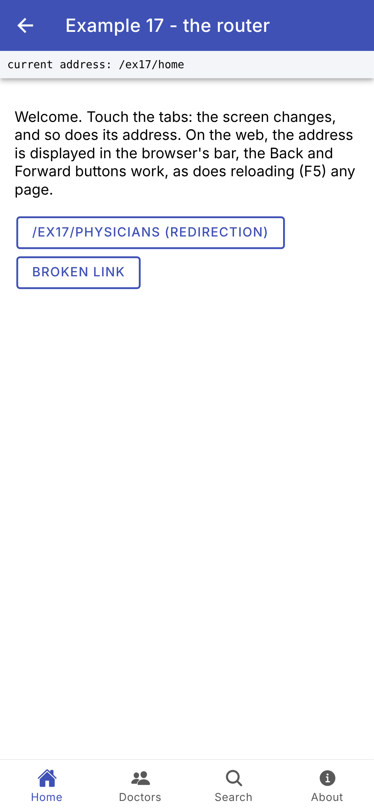
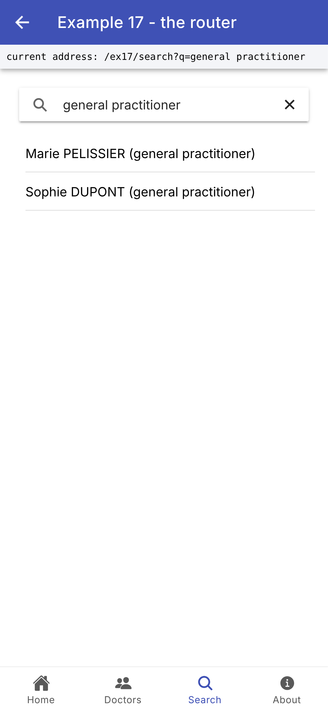

5. 路由
一个应用程序有多个屏幕。在 Web 上，每个屏幕都有一个地址 （/ex17/doctors/2）：它可以被引用、通过链接打开、重新加载，或由守卫保护。[Angular] 使用它的路由器 （[@angular/router] 包）来管理这些地址，我们从第一个示例起就一直在使用它：示例应用的主页把地址 /ex01 与示例 01 的页面关联，/ex02 与示例 02 的页面关联，依此类推。[Ionic] 并不取代这个路由器：它在其基础上构建，并增加了移动应用所期望的功能。它的 [<ion-router-outlet>] 组件把页面组织成一个栈：新页面堆叠在前一个页面之上（带有 Android 动画），手机的返回键把它从栈中弹出，而前一个页面——它仍保留在内存中——会恢复成离开时的样子。它结合了 [Navigator] （来自 [Flutter] ）和 [go_router] 包的功能。
5.1. 示例 17：路由器
示例 17 有六个页面：主页、医生列表、医生简介、搜索页、按需加载的“关于”页，以及用于未知地址的页面。前五个被归入一个“外壳”（shell）中，屏幕底部有一个标签栏（四个标签：医生详情页属于“医生”标签）。
5.1.1. 数据
| // =========================================================================
// src/app/ex17-router/data.ts - 示例 17 的数据
// -------------------------------------------------------------------------
// “硬编码”的数据，以便本示例不依赖服务器。
// =========================================================================
export interface Doctor {
id: number;
title: string;
firstName: string;
lastName: string;
specialty: string;
}
export const doctors: Doctor[] = [
{ id: 1, title: 'Mme', firstName: 'Marie', lastName: 'PELISSIER', specialty: 'general practitioner' },
{ id: 2, title: 'Mr', firstName: 'Paul', lastName: 'TATOU', specialty: 'pediatrician' },
{ id: 3, title: 'Melle', firstName: 'Sophie', lastName: 'DUPONT', specialty: 'general practitioner' },
];
|
“硬编码”的数据，以便本示例不依赖服务器：一个由 [Doctor] 接口所描述的对象数组。
5.1.2. 路由
| // =========================================================================
// src/app/ex17-router/routes.ts - 示例 17 的路由（ROUTES）
// -------------------------------------------------------------------------
// 一个应用程序有多个屏幕（“页面”）。Angular 的路由器（ROUTER）
// 把一个地址（ADDRESS）（路径，与 Web 上一样：/ex17/doctors/2）与
// 一个页面关联起来。Ionic 以它为基础：它的 <ion-router-outlet> 把它变成一个
// 页面栈（我们压入，我们弹出，Android 的返回键会弹出）。
// 这些路由是 app.routes.ts 中 /ex17 路由的子路由（CHILDREN）
// （loadChildren）：它们的路径相对于 /ex17。
// 'doctors/:id' :id 是一个参数（/ex17/doctors/2 -> id = "2"）；
// children 显示在“外壳”之中（IN）的路由（顶部
// 栏，底部的标签栏）；
// redirectTo 重定向：旧地址通向新地址；
// '**' “通配符”：任何没有路由能识别的地址；
// title 文档的标题（浏览器标签页）；
// loadComponent 延迟（DEFERRED）加载：页面的代码只在
// 第一次访问时才下载。
// =========================================================================
import { ResolveFn, Routes } from '@angular/router';
import { Shell } from './shell';
import { doctors } from './data';
import { Home } from './pages/home.page';
import { DoctorDetail } from './pages/doctor-detail.page';
import { DoctorList } from './pages/doctor-list.page';
import { NotFoundPage } from './pages/not-found.page';
import { Search } from './pages/search.page';
// 医生页面的标题，根据地址中的 :id 参数计算得出
const doctorTitle: ResolveFn<string> = (route) => {
const doctor = doctors.find((m) => m.id === Number(route.paramMap.get('id')));
return doctor ? `${doctor.firstName} ${doctor.lastName}` : 'Unknown doctor';
};
export const routes: Routes = [
{
// 外壳（Shell）包含标签栏；它的子
// 路由显示在外壳之中（IN），位于标签栏上方
path: '',
component: Shell,
children: [
// 单独的 /ex17：我们前往主页标签
{ path: '', redirectTo: 'home', pathMatch: 'full' },
{ path: 'home', title: 'Home', component: Home },
{ path: 'doctors', title: 'Doctors', component: DoctorList },
// 带有参数（PARAMETER）的页面：/ex17/doctors/2；它以
// 'doctors' 开头：它属于“医生”标签，并在该标签中
// 把一个页面压入列表之上
{ path: 'doctors/:id', title: doctorTitle, component: DoctorDetail },
// /ex17/search?q=pediatrician：q 参数是一个查询（QUERY）参数
{ path: 'search', title: 'Search', component: Search },
// 延迟加载：import() 是一个动态（DYNAMIC）导入
// （一个 Promise）；页面的代码被放入一个单独的文件中
{
path: 'about',
title: 'About',
loadComponent: () => import('./pages/about.page').then((m) => m.About),
},
// 重定向：该路由没有页面，它把用户送往另一个地址
{ path: 'physicians', redirectTo: 'doctors' },
],
},
// /ex17 下的任何其他地址：未找到页面，位于外壳之外（OUTSIDE）
{ path: '**', title: 'Page not found', component: NotFoundPage },
];
|
路由 把一个路径与一个页面关联起来。示例 17 的路由存放在它自己的文件夹中，应用程序的 /ex17 路由通过 [loadChildren] 加载它们（稍后讨论）：它们是 /ex17 的子路由，其路径相对于 /ex17（[home] 指的是地址 /ex17/home）。
- 第 30–33 行：一个 [ResolveFn<string>] 类型的函数，它根据 URL 的 [:id] 参数（[route.paramMap.get('id')]）计算医生页面的标题。路由的 [title] 属性是文档标题（Web 上的浏览器标签页）：可以是字符串，也可以是这样的函数。它对应于 [Title] widget 在 [Flutter] 中的作用；
- 第 36–41 行：示例的外壳。该路由没有自己的路径（[path: '']）；它显示 [Shell] 组件（顶部栏和标签栏），而它的子路由（[children]）显示在外壳之中。这相当于 [ShellRoute] 在 [go_router] 中的作用；
- 第 43 行：单独的地址 /ex17 被重定向到 /ex17/home。[pathMatch: 'full']：只有当剩余地址为空时该路由才适用（否则，空路径——它是每个地址的开头——总会匹配）；
- 第 44–45 行：一个标准路由：它的路径、标题和页面组件；
- 第 49 行：一个带有参数的路由：[doctors/:id]，其中 [:id] 是一个参数（[/ex17/doctors/2]：[id] 等于 ["2"]，它始终是字符串）。使用 [go_router] 时，这个路由嵌套在列表路由之内；这里它与列表路由相邻。它的路径以 [doctors] 开头：对 [Ionic] 而言，它属于“医生”标签，其页面堆叠在该标签栈中的列表之上；
- 第 51 行：搜索。它的查询参数（位于 [?] 之后：[/ex17/search?q=pediatrician]）不出现在路由的路径中：任何路由都可以接受它们；
- 第 54–58 行：延迟加载。[loadComponent] 是一个返回 [Promise] 的函数：[import('./pages/about.page')] 是 [JavaScript] 的动态导入，它在执行时加载文件，而 [then] 从中提取组件。编译（[ng build]）随后会把该页面的代码放入一个单独的 [JavaScript] 文件中，该文件在第一次访问该页面时才下载。这对应于 [Dart] 通过 [deferred as] 进行的导入；
- 第 60 行：重定向：该路由没有页面；它重定向到另一个地址。[redirectTo] 也可以是一个计算地址的函数；
- 第 64 行：通配符路由 [**] 匹配所有之前的路由都没有匹配的地址（路由器按顺序尝试各路由）。它被放在外壳之外：“页面未找到”页面有它自己的标题栏。这对应于 [errorBuilder] 在 [go_router] 中的作用。
5.1.3. 启动
路由器在应用程序启动时一次性设置完毕，位于 [main.ts] 文件中：
| // 路由器：路由列表（app.routes.ts）；
// withComponentInputBinding：路由的参数会传给
// 页面组件的输入（input）（见示例 17）
provideRouter(routes, withComponentInputBinding()),
|
- 第 32 行：[provideRouter] 接收应用程序的路由列表；[withComponentInputBinding()] 选项会把路由的参数（路径中的参数，如 [:id]，以及请求中的参数，如 [?q=]）提供给页面组件中同名的输入 （[input()]）。这就是在这里取代 [state.pathParameters['id']] （在 [go_router] 中）的方式。
而应用程序路由 /ex17（文件 [app.routes.ts]）加载该示例的路由：
| // 示例 17 和 18 有自己的路由，是 /ex17 和 /ex18 的“子路由”
{ path: 'ex17', loadChildren: () => import('./ex17-router/routes').then((m) => m.routes) },
{ path: 'ex18', loadChildren: () => import('./ex18-guards/routes').then((m) => m.routes) },
|
- 第 31 行：[loadChildren]：与 [loadComponent] 一样，是一个动态导入；示例文件 [routes.ts]及其导入的所有内容，只有在第一次访问以 /ex17 开头的 URL 时才会下载。
5.1.4. 应用程序外壳
| // =========================================================================
// src/app/ex17-router/shell.ts - 示例 17 的“外壳”
// -------------------------------------------------------------------------
// 顶部栏、底部的标签栏，以及位于两者之间的当前路由的
// 页面。它是 Ionic 的 <ion-tabs> 组件：
// - <ion-tab-bar slot="bottom">：标签栏，位于底部；
// - <ion-tab-button tab="doctors">：一个标签；触碰它会前往
// 地址 /ex17/doctors。活动标签是其名称为地址的
// 第一段（在 /ex17 之后）的那个：/ex17/doctors/2 -> 医生；
// - 每个标签都有它自己（OWN）的页面栈：我们可以进入
// 某位医生的详情，切换到“搜索”标签，再回到
// “医生”标签……并再次看到该详情。
// =========================================================================
import { Component, computed, inject } from '@angular/core';
import { Router } from '@angular/router';
import {
IonBackButton, IonButtons, IonHeader, IonIcon, IonLabel, IonTabBar, IonTabButton, IonTabs, IonTitle, IonToolbar,
} from '@ionic/angular';
import { addIcons } from 'ionicons';
import { home, informationCircle, people, search } from 'ionicons/icons';
import { DeferredLoading } from './pages/deferred-loading';
// 标签：标签的名称（= 路径，在 /ex17 之后）、标签文字、图标
const tabs = [
{ tab: 'home', label: 'Home', icon: 'home' },
{ tab: 'doctors', label: 'Doctors', icon: 'people' },
{ tab: 'search', label: 'Search', icon: 'search' },
{ tab: 'about', label: 'About', icon: 'information-circle' },
];
@Component({
selector: 'app-ex17-shell',
imports: [
IonTabs, IonTabBar, IonTabButton, IonIcon, IonLabel, IonHeader, IonToolbar, IonButtons, IonBackButton, IonTitle,
DeferredLoading,
],
templateUrl: './shell.html',
styles: `
.address {
background: var(--ion-color-light);
color: var(--ion-color-light-contrast);
padding: 8px;
font-family: monospace;
font-size: 12px;
}
`,
})
export class Shell {
readonly tabs = tabs;
private readonly router = inject(Router);
// 当前地址。lastSuccessfulNavigation 是路由器的一个信号（SIGNAL）：
// 最近一次成功的导航；finalUrl：它的地址，在
// 重定向之后。decodeURIComponent：%20 重新变回空格
readonly address = computed(() => {
const navigation = this.router.lastSuccessfulNavigation();
return navigation?.finalUrl ? decodeURIComponent(this.router.serializeUrl(navigation.finalUrl)) : '';
});
constructor() {
// 模板所使用的图标
addIcons({ home, people, search, informationCircle });
}
}
|
| <!-- ======================================================================
shell.html - the shell of example 17: <ion-tabs>
====================================================================== -->
<ion-tabs>
<!-- slot="top"：放置在各标签页之上（ABOVE） -->
<ion-header slot="top">
<ion-toolbar color="primary">
<ion-buttons slot="start">
<!-- 这个返回按钮会离开该示例：它弹出外壳 -->
<ion-back-button defaultHref="/" />
</ion-buttons>
<ion-title>Example 17 - the router</ion-title>
</ion-toolbar>
<div class="address">current address: {{ address() }}</div>
<!-- 进度条，在延迟加载的页面加载期间显示 -->
<app-deferred-loading />
</ion-header>
<!-- here, <ion-tabs> itself places an <ion-router-outlet>: the page of
the current child route -->
<!-- 底部的标签栏：移动应用的典型特征 -->
<ion-tab-bar slot="bottom">
@for (tab of tabs; track tab.tab) {
<ion-tab-button [tab]="tab.tab">
<ion-icon [name]="tab.icon" />
<ion-label>{{ tab.label }}</ion-label>
</ion-tab-button>
}
</ion-tab-bar>
</ion-tabs>
|
外壳是 [Ionic] 的 [<ion-tabs>] 组件：一个标签栏，以及位于它上方的所选标签的页面。
- 第 25–30 行（shell.ts）：标签：名称（同时也是 /ex17 之后的路径）、标签文字和图标；
- 第 56–59 行（shell.ts）：当前地址，一个计算信号（[computed]）。路由器公开了一些信号：[lastSuccessfulNavigation()]，即最近一次成功的导航，以及 [currentNavigation()]，即当前的导航（稍后讨论）。[finalUrl] 是重定向之后的目标地址；[serializeUrl] 把它转换为字符串；[decodeURIComponent] 解码被编码的字符（[%20] 还原为空格）。由于每次导航时都会重新读取该信号，所显示的地址会随之更新；
- 第 63 行（shell.ts）：模板所使用的图标；
- 第 7–18 行（shell.html）：顶部栏。[<ion-tabs>] 把标有 [slot="top"] 的元素放在标签页之上，其余的放在下方。此栏上的返回按钮会收起整个外壳：它把你带回示例菜单；
- 第 15 行（shell.html）：当前地址；
- 第 17 行（shell.html）：一个进度条，在导航期间显示（见下文）；
- 第 20–21 行（shell.html）：[<ion-tabs>] 自己会在两个栏之间放置一个 [<ion-router-outlet>]：即当前子路由的页面。这一行我们不需要写；
- 第 24–31 行（shell.html）：底部标签栏（[<ion-tab-bar slot="bottom">]），是移动应用的典型特征，对应于 [NavigationBar] 在 [Flutter] 中的作用。每个 [<ion-tab-button [tab]="...">] 就是一个标签；点按它会前往地址 /ex17/<tab name>。
与 [go_router] 有两点不同：
- 活动标签不是由代码计算的：[<ion-tabs>] 根据 URL 推断它（名称为 /ex17 之后 URL 第一段的那个标签：[/ex17/doctors/2] 指的是 [doctors] 标签）；
- 每个标签都有它自己的页面栈。如果你查看某位医生的详情，切换到“搜索”标签，然后再回到“医生”标签，你会再次看到该医生的详情，而返回按钮会把你带回列表。这是移动应用（例如 [Android] 和 [iOS] 应用）的标准行为。
5.1.5. 页面
标签中的页面只有一个 [<ion-content>]：它们的顶部栏就是外壳的顶部栏。
| // =========================================================================
// src/app/ex17-router/pages/home.page.ts - 主页标签
// -------------------------------------------------------------------------
// routerLink：指向某个地址的链接（LINK）；点按它即可前往该地址，就像 Web 上的
// <a href> 链接一样，但不会重新加载应用程序。
// =========================================================================
import { Component } from '@angular/core';
import { RouterLink } from '@angular/router';
import { IonButton, IonContent } from '@ionic/angular';
@Component({
selector: 'app-ex17-home',
imports: [RouterLink, IonContent, IonButton],
templateUrl: './home.page.html',
})
export class Home {}
|
| <!-- ======================================================================
home.page.html - the home tab of example 17
====================================================================== -->
<!-- 标签页只有它自己的内容：顶部栏是外壳的顶部栏 -->
<ion-content class="ion-padding">
<p>
Welcome. Touch the tabs: the screen changes, and so does its address. On the web, the address
is displayed in the browser's bar, the Back and Forward buttons work, as does
reloading (F5) any page.
</p>
<!-- 指向特定地址的链接 -->
<ion-button fill="outline" routerLink="/ex17/physicians">/ex17/physicians (redirection)</ion-button>
<ion-button fill="outline" routerLink="/ex17/unknown-page">Broken link</ion-button>
</ion-content>
|
- 第 13–14 行（HTML）：两个链接。[routerLink] 指令 来自 [Angular] （在 .ts 文件的第 9 行导入），可以把任何元素变成链接：点按它会前往指定的地址，就像 Web 上的 [<a href>] 链接一样，但不会重新加载应用程序。第一个指向 /ex17/physicians 重定向；第二个指向一个不存在的地址。
| // =========================================================================
// src/app/ex17-router/pages/doctor-list.page.ts - 带参数的链接
// -------------------------------------------------------------------------
// [routerLink]="['/ex17/doctors', m.id]"：地址由一个
// 片段数组构建而成：/ex17/doctors/2。医生页面被
// 压入（PUSHED）列表之上：返回按钮会回到它。
// =========================================================================
import { Component } from '@angular/core';
import { RouterLink } from '@angular/router';
import { IonContent, IonItem, IonLabel, IonList } from '@ionic/angular';
import { doctors } from '../data';
@Component({
selector: 'app-ex17-doctor-list',
imports: [RouterLink, IonContent, IonList, IonItem, IonLabel],
templateUrl: './doctor-list.page.html',
})
export class DoctorList {
readonly doctors = doctors;
}
|
| <!-- ======================================================================
doctor-list.page.html - the Doctors tab of example 17
====================================================================== -->
<ion-content>
<ion-list>
@for (m of doctors; track m.id) {
<!-- button：该列表项会对触摸作出反应；detail：右侧的 > 箭头 -->
<ion-item button detail [routerLink]="['/ex17/doctors', m.id]">
<ion-label>{{ m.title }} {{ m.firstName }} {{ m.lastName }}</ion-label>
</ion-item>
}
</ion-list>
</ion-content>
|
- 第 9 行（HTML）：一个可点击的列表项（[button]），带有向右的箭头（[detail]）。它的 URL 由一个片段数组构造而成：[[routerLink]="['/ex17/doctors', m.id]"] 得到 /ex17/doctors/2。医生页面被压入（PUSHED）列表之上（一次“前进”式导航步骤）：返回按钮会回到该页面。
| // =========================================================================
// src/app/ex17-router/pages/doctor-detail.page.ts - 带参数的页面
// -------------------------------------------------------------------------
// 路由器把地址中的 :id 参数交给页面的 id 输入
// （input），它是一个字符串（"2"）：这就是 withComponentInputBinding()（main.ts）。
// 如果我们从 /ex17/doctors/1 导航到 /ex17/doctors/2，Angular 会保留
// 同一个页面，只更改输入的值：由它计算（computed）得出的
// 所显示的医生随之变化。
// 通过代码（CODE）导航：NavController，Ionic 的导航服务。
// =========================================================================
import { Component, computed, inject, input } from '@angular/core';
import { IonButton, IonContent, IonRouterOutlet, IonText, NavController } from '@ionic/angular';
import { doctors } from '../data';
@Component({
selector: 'app-ex17-doctor-detail',
imports: [IonContent, IonButton, IonText],
templateUrl: './doctor-detail.page.html',
})
export class DoctorDetail {
// 地址中的 :id 参数
readonly id = input.required<string>();
// Number("abc") 是 NaN：找不到任何医生（undefined）
readonly doctor = computed(() => doctors.find((m) => m.id === Number(this.id())));
// 下一位医生的编号：1 -> 2 -> 3 -> 1
readonly next = computed(() => ((this.doctor()?.id ?? 0) % doctors.length) + 1);
private readonly navCtrl = inject(NavController);
// 该标签的页面栈（显示此页面的 <ion-router-outlet>）
private readonly outlet = inject(IonRouterOutlet);
back(): void {
// canGoBack：其下面是否还有页面？（如果我们是在 Web 上
// 直接进入这个地址的，则没有）
if (this.outlet.canGoBack()) {
this.outlet.pop();
} else {
this.navCtrl.navigateBack('/ex17/doctors');
}
}
nextDoctor(): void {
// replaceUrl：该地址替换（REPLACES）历史记录中的当前地址
// （不压栈：返回按钮会回到列表）
this.navCtrl.navigateForward(['/ex17/doctors', this.next()], { replaceUrl: true });
}
}
|
| <!-- ======================================================================
doctor-detail.page.html - the page of a doctor (example 17)
====================================================================== -->
<ion-content class="ion-padding">
<!-- @if (...; as m)：测试的值，在该块中被命名为 m -->
@if (doctor(); as m) {
<h2>{{ m.title }} {{ m.firstName }} {{ m.lastName }}</h2>
<p>Specialty: {{ m.specialty }}</p>
<ion-button fill="outline" (click)="back()">Back</ion-button>
<ion-button (click)="nextDoctor()">Next doctor</ion-button>
} @else {
<ion-text color="danger">Doctor no. {{ id() }} does not exist.</ion-text>
}
</ion-content>
|
- 第 23 行（.ts）：输入 [id]，它从地址接收参数 [:id] （[withComponentInputBinding]）。[input.required<string>()]：一个必需的输入，类型为字符串；
- 第 26 行（.ts）：医生，一个由输入计算得出的信号。[Number("abc")] 等于 [NaN]，它不等于任何数字：不正确的 [id] 会得到 [undefined] （在 [int.tryParse] 与 [Dart] 中就是如此）。如果你从 /ex17/doctors/1 导航到 /ex17/doctors/2，[Angular] 会保留同一个页面，只更改输入的值：所显示的医生随之变化；
- 第 28 行（.ts）：下一位医生的编号（1、2、3，然后回到 1）；
- 第 30 行（.ts）：[NavController]，[Ionic] 的导航服务：通过代码（CODE）进行导航；
- 第 32 行（.ts）：[IonRouterOutlet]：显示此页面的页面栈（“医生”标签上的那个）；
- 第 34–42 行（.ts）：页面上的返回按钮。如果其下面还有页面（[canGoBack()]），就把它从栈中移除（[pop()]）；否则（在 Web 上，用户可能是直接进入这个地址的），就以“后退”动画把用户带到列表（[navigateBack]）；
- 第 44–48 行（.ts）：下一位医生：一次“前进”式导航（[navigateForward]），但带有 [replaceUrl: true]：新地址会替换（REPLACES）历史记录中的当前地址。没有栈：返回按钮回到列表，而不是前一位医生（在 [context.pushReplacement] 与 [go_router] 中就是如此）；
- 第 7–14 行（HTML）：[@if (doctor(); as m)]：如果医生存在，则在该块中把他命名为 [m] ；否则（[@else]），显示一条消息。
使用 [Ionic]，有三种导航方式：
- 通过链接：[routerLink]；
- 通过 [Angular] 路由器：[router.navigate([...])] 或 [router.navigateByUrl('...')]；
- 通过 [NavController] （来自 [Ionic]）：[navigateForward] （压入一个页面，原先是 [context.push]）、[navigateBack] （后退，弹出位于栈顶的页面）、[navigateRoot] （从一个新栈开始——原先是 [context.go]）、[back()] （相当于返回按钮）。这些方法会调用 [Angular] 路由器，并指定导航的方向（DIRECTION），动画和栈管理都取决于这个方向。
| // =========================================================================
// src/app/ex17-router/pages/search.page.ts - 由地址驱动的页面
// -------------------------------------------------------------------------
// /ex17/search?q=pediatrician：页面完全由它的
// 地址来描述。在 Web 上，我们可以把它加入书签、重新加载、
// 后退。搜索意味着前往（GOING）地址 /ex17/search?q=...：
// 页面显示地址所说的内容，仅此而已。
// 查询（QUERY）参数 q（位于 ? 之后）也会交给同名的
// 输入（withComponentInputBinding）；如果缺失，则为 undefined。
// =========================================================================
import { Component, computed, inject, input } from '@angular/core';
import { Router } from '@angular/router';
import { IonContent, IonItem, IonLabel, IonList, IonSearchbar } from '@ionic/angular';
import { doctors } from '../data';
@Component({
selector: 'app-ex17-search',
imports: [IonContent, IonSearchbar, IonList, IonItem, IonLabel],
templateUrl: './search.page.html',
})
export class Search {
// 地址中的 ?q=... 参数
readonly q = input<string>();
// 结果：在地址（因而 q）变化时重新计算
readonly results = computed(() => {
const text = (this.q() ?? '').toLowerCase();
return doctors.filter((m) => `${m.firstName} ${m.lastName} ${m.specialty}`.toLowerCase().includes(text));
});
private readonly router = inject(Router);
search(input: string): void {
// queryParams：路由器构建地址，并对需要编码的部分
// 进行编码（空格 -> %20）
this.router.navigate(['/ex17/search'], { queryParams: { q: input.trim() } });
}
}
|
| <!-- ======================================================================
search.page.html - the Search tab of example 17
====================================================================== -->
<ion-content class="ion-padding">
<!-- a NON-controlled field: [value] gives it the value of the address (and
gives it again if the address changes: browser's Back button);
#field: a reference to the component, to read its value;
enterkeyhint="search": the Enter key of the keyboard becomes a magnifying glass -->
<ion-searchbar
#field
placeholder="name or specialty"
enterkeyhint="search"
[value]="q() ?? ''"
(keyup.enter)="search(field.value ?? '')"
/>
<ion-list>
@for (m of results(); track m.id) {
<ion-item>
<ion-label>{{ m.firstName }} {{ m.lastName }} ({{ m.specialty }})</ion-label>
</ion-item>
} @empty {
<ion-item>
<ion-label color="medium">No result.</ion-label>
</ion-item>
}
</ion-list>
</ion-content>
|
- 第 24 行（.ts）：输入 [q] 接收 [?q=...] 请求参数。它可能缺失：这时输入为 [undefined]，因此得到类型 [input<string>()] （字符串或 [undefined]）以及 [?? ''] 的取值；
- 第 27–30 行（.ts）：结果，在地址（即 [q]）变化时重新计算；
- 第 34–38 行（.ts）：搜索——这是前往（GOING to）地址 /ex17/search?q=<input>。[router.navigate] 接收路径，而 [queryParams] 接收请求参数；它会对必要的部分进行编码来构造 URL（空格变成 [%20]）。页面完全由其地址来描述：在 Web 上，你可以把它加入书签、重新加载或后退；
- 第 10–16 行（HTML）：一个 [Ionic] 搜索栏（[<ion-searchbar>]，带有放大镜和清除按钮）。这是一个非受控字段：[[value]] 把它的值设置为地址，并在地址变化时（通过浏览器的返回按钮）重置它，就像 [ValueKey(q)] 这个键在 [Flutter] 中的作用一样。[#field] 是一个模板引用变量：它指向这样一个组件，当按下回车键（[(keyup.enter)]）时读取其值（[field.value]）。[enterkeyhint="search"]：手机键盘上的回车键变成放大镜；
- 第 18–26 行（html）：结果；[@empty]：列表为空时显示的内容。
| // =========================================================================
// src/app/ex17-router/pages/about.page.ts - 按需加载的页面
// -------------------------------------------------------------------------
// 见 routes.ts 中的 loadComponent：该页面的代码在编译（ng build）时
// 被放入一个单独的 JavaScript 文件中。
// =========================================================================
import { Component } from '@angular/core';
import { IonContent } from '@ionic/angular';
@Component({
selector: 'app-ex17-about',
imports: [IonContent],
templateUrl: './about.page.html',
})
export class About {}
|
| <!-- ======================================================================
about.page.html - the About tab of example 17
====================================================================== -->
<ion-content class="ion-padding">
<p>
On the web, the code of this page was downloaded on the first visit (Network tab of the
development tools: a chunk-XXXXXXXX.js file). On a phone, this file is
already in the application: it is read on the spot, without download.
</p>
</ion-content>
|
按需加载的页面（见 [loadComponent] 在 [routes.ts] 中）并无特别之处：决定延迟加载的是路由。[ng build] 的结果显示了它单独的文件（“Lazy chunk files ... about-page”）。顺便说一下，在示例应用中，所有页面都是这样加载的（见 [app.routes.ts]）：启动时只下载菜单。
| // =========================================================================
// src/app/ex17-router/pages/deferred-loading.ts
// -------------------------------------------------------------------------
// 进度条，只要有导航正在进行（IN PROGRESS）就显示：
// 在此期间，路由器会下载延迟加载页面的代码
// （loadComponent），或等待守卫的回答（示例 18）。
// currentNavigation 是路由器的一个信号（SIGNAL）：正在进行的导航，没有时
// 为 null。
// =========================================================================
import { Component, inject } from '@angular/core';
import { Router } from '@angular/router';
import { IonProgressBar } from '@ionic/angular';
@Component({
selector: 'app-deferred-loading',
imports: [IonProgressBar],
templateUrl: './deferred-loading.html',
})
export class DeferredLoading {
readonly router = inject(Router);
}
|
| <!-- ======================================================================
deferred-loading.html - an "indeterminate" progress bar
====================================================================== -->
@if (router.currentNavigation()) {
<ion-progress-bar type="indeterminate" />
}
|
在 [Flutter] 中，[DeferredLoading] widget 在等待页面代码时会显示加载指示器。而在 [Angular] 中，路由器本身会等待代码到达后再显示页面：在此期间，前一个页面仍停留在屏幕上。因此 [DeferredLoading] 组件在导航进行期间会显示一个进度条：
- 第 5 行（html）：[router.currentNavigation()] 是路由器的一个信号：正在进行的导航，或 [null]。在下载延迟加载的页面期间（或在等待守卫期间，示例 18），会显示进度条（[<ion-progress-bar type="indeterminate">]，一个无尽循环的动画条）；导航结束时，信号恢复为 [null]，进度条随之消失。外壳把它放在顶部栏之下（shell.html 的第 17 行）。
| // =========================================================================
// src/app/ex17-router/pages/not-found.page.ts - 未知地址
// -------------------------------------------------------------------------
// 通配符路由 '**'（routes.ts）的页面：它位于外壳之外（OUTSIDE），
// 因此有它自己的顶部栏。
// =========================================================================
import { Component, computed, inject } from '@angular/core';
import { Router } from '@angular/router';
import { IonButton, IonContent, IonHeader, IonText, IonTitle, IonToolbar, NavController } from '@ionic/angular';
@Component({
selector: 'app-ex17-not-found-page',
imports: [IonHeader, IonToolbar, IonTitle, IonContent, IonText, IonButton],
templateUrl: './not-found.page.html',
})
export class NotFoundPage {
private readonly router = inject(Router);
private readonly navCtrl = inject(NavController);
// 所请求的地址（见 shell.ts）
readonly address = computed(() => {
const navigation = this.router.lastSuccessfulNavigation();
return navigation?.finalUrl ? decodeURIComponent(this.router.serializeUrl(navigation.finalUrl)) : '';
});
backHome(): void {
// navigateBack：一次“后退”导航（动画从左向
// 右）；未找到页面被弹出栈
this.navCtrl.navigateBack('/ex17/home');
}
}
|
| <!-- ======================================================================
not-found.page.html - the page of unknown addresses (example 17)
====================================================================== -->
<ion-header>
<ion-toolbar color="primary">
<ion-title>Page not found</ion-title>
</ion-toolbar>
</ion-header>
<ion-content class="ion-padding">
<p><ion-text color="danger">No page at the address {{ address() }}.</ion-text></p>
<ion-button (click)="backHome()">Back to home</ion-button>
</ion-content>
|
未知地址页面位于外壳之外：它有自己的顶部栏（HTML 的第 5–9 行）。它显示所请求的地址（.ts 文件的第 22–25 行，与外壳中相同），而它的按钮通过“后退”导航把用户带回主页（.ts 文件的第 30 行）：“页面未找到”页面被弹出栈，而一直保留在其下方内存中的外壳重新出现。
5.1.6. 运行
主页；医生简介（堆叠在列表之上：标签栏仍然存在，手机的返回键会回到列表）；输入“general practitioner”并按回车后的搜索结果；一个未知地址（主页上的失效链接）：
 |  |  |  |
在浏览器中（[ng serve]），地址同样会出现在地址栏中，后退和前进按钮可以正常使用，你也可以手动输入地址：/ex17/doctors/3、/ex17/search?q=pediatrician、/ex17/physicians……
与 [go_router] 相比，[Angular] 的路由器更具声明式风格：路由只是一个简单的对象列表，参数通过页面的输入字段传递，而懒加载只是路由的一个属性。[Ionic] 增加了移动设备特有的功能：页面栈（[<ion-router-outlet>]）、带有独立栈的标签（[<ion-tabs>]）、导航方向以及导航动画（[NavController]）。我们将在 [RdvMedecins] 的 [Angular] 客户端中找到完全相同的概念（路由、[routerLink]、[router.navigate]）：只有 [Ionic] 的组件是专门面向移动设备的。
5.2. 示例 18：导航限制
某些页面只应由已登录的用户打开，或由具有特定角色的用户打开。[Angular] 的路由器用守卫来保护它们：守卫是路由器在进入这些页面之前调用的函数。
5.2.1. 会话
| // =========================================================================
// src/app/ex18-guards/session.ts - 一个模拟的（SIMULATED）会话（没有服务器）
// -------------------------------------------------------------------------
// 已登录的用户必须能被页面（PAGES）（顶部栏、
// 日程）和路由器的守卫（GUARDS）（它们是函数，不是
// 组件）所识别。我们把它存放在一个服务（SERVICE）中，这是所有人
// 都通过 inject(Session) 获得的唯一对象（见示例 14）：
// - 一个私有信号，即状态；
// - 该信号的只读视图；
// - 修改它的方法。
// 读取该信号的各方（模板）会在它变化时得到通知。
// （示例 23 将用真实的服务器做同样的事情。）
// =========================================================================
import { Injectable, signal } from '@angular/core';
export type Role = 'ADMIN' | 'DOCTOR' | 'USER';
export interface User {
login: string;
role: Role;
}
// 三个“硬编码”的账户（密码 = 登录名）
const accounts: Record<string, Role> = { admin: 'ADMIN', pelissier: 'DOCTOR', martin: 'USER' };
// providedIn: 'root'：整个应用程序只有一个（ONE）实例
@Injectable({ providedIn: 'root' })
export class Session {
// 状态：null，表示没有人登录
private readonly _user = signal<User | null>(null);
// asReadonly：我们可以读取该信号，但不能修改它
readonly user = this._user.asReadonly();
logIn(login: string, password: string): boolean {
const role = accounts[login];
if (role === undefined || password !== login) {
return false;
}
this._user.set({ login, role });
return true;
}
logOut(): void {
this._user.set(null);
}
}
|
已登录的用户必须能被页面（顶部栏、日程）和路由器守卫所识别——它们都不是组件。用户信息存放在一个服务 中（见示例 14），这是所有人都通过 [inject(Session)] 获得的唯一对象：
- 第 17–22 行：角色（由三个字符串组成的“联合”类型）和用户；
- 第 25 行：三个“硬编码”的账户（密码 = 登录名）：一个把登录名与角色关联起来的对象（[Record<string, Role>]）；
- 第 28 行：[providedIn: 'root']：整个应用程序共用该服务的唯一一个实例；
- 第 31–33 行：状态，一个私有信号（[null]：没有人登录），以及它的只读视图（[asReadonly()]）：其他人可以读取它，但只有服务的方法才能修改它；
- 第 35–42 行：模拟的登录。它修改信号：所有读取该信号的内容（模板、计算信号）都会随之更新。这就相当于 [Flutter] 的 [ChangeNotifier] 中的 [notifyListeners()]，而无需自己编写它。（示例 23 将用真实的服务器做同样的事情。）
5.2.2. 守卫与受保护的路径
| // =========================================================================
// src/app/ex18-guards/routes.ts - 由守卫保护（PROTECTED）的路由
// -------------------------------------------------------------------------
// canActivate：路由的守卫（GUARDS）列表，即函数（类型为
// CanActivateFn），路由器在前往该路由之前（BEFORE）调用它们。守卫接收
// 所请求的路由和导航状态（state.url：所请求的
// 地址），并返回：
// - true：导航继续；
// - false：导航被取消；
// - 一个 UrlTree（由路由器构建的地址）：导航
// 被替换为前往该地址的导航。
// 守卫可以使用 inject()：它在“注入
// 上下文”中被调用。
//
// 这是 NestJS 守卫（JwtAuthGuard、
// RolesGuard）在客户端的对应物——但有一个根本性（FUNDAMENTAL）的区别：客户端守卫
// 只是一种便利措施。应用程序掌握在用户手中，用户
// 可以随意修改它。对数据真正的保护仍然
// 在服务器（SERVER）上（见关于黑盒的那一章）。
// =========================================================================
import { inject } from '@angular/core';
import { CanActivateFn, Router, Routes } from '@angular/router';
import { Shell } from './shell';
import { Home } from './pages/home.page';
import { Schedule } from './pages/schedule.page';
import { Login } from './pages/login.page';
import { Role, Session } from './session';
// “需要登录”守卫：未登录 -> 转到登录页面，
// 并记住我们原本想去的地方（returnUrl 参数）
export const loginRequired: CanActivateFn = (route, state) => {
if (inject(Session).user() === null) {
return inject(Router).createUrlTree(['/ex18/login'], { queryParams: { returnUrl: state.url } });
}
return true;
};
// “需要角色”守卫：一个构建（BUILDS）守卫的函数
export function roleRequired(...roles: Role[]): CanActivateFn {
return (route, state) => {
const u = inject(Session).user();
if (u === null || !roles.includes(u.role)) {
// 已登录，但没有正确的角色：返回主页，并附带原因
return inject(Router).createUrlTree(['/ex18'], { queryParams: { denied: state.url } });
}
return true;
};
}
export const routes: Routes = [
{
path: '',
component: Shell,
children: [
{ path: '', pathMatch: 'full', component: Home },
{ path: 'login', component: Login },
{ path: 'schedule', canActivate: [loginRequired], component: Schedule },
{
path: 'administration',
// 各个守卫按顺序：第一个没有返回 true 的守卫起决定作用
canActivate: [loginRequired, roleRequired('ADMIN')],
// 只有在通过各个守卫之后，才会加载页面的代码
loadComponent: () => import('./pages/administration.page').then((m) => m.Administration),
},
// 任何其他地址（没有匹配的路由）：返回主页
{ path: '**', redirectTo: '' },
],
},
];
|
激活守卫是一个 [CanActivateFn] 类型的函数，放在路由的 [canActivate] 列表中。路由器在进入该路由之前调用它；它接收所请求的路由和导航状态（[state.url]：所请求的地址），并返回：
- [true]：导航继续；
- [false]：导航被取消；
- 一个 [UrlTree]，即由路由器生成的地址（[router.createUrlTree]）：导航被替换为前往该地址的导航。
守卫也可以返回带有上述某个值的 [Promise] 或 [Observable] （例如用于查询服务器）。代码如下：
- 第 32–37 行：“需要登录”守卫：未登录？重定向到登录页面，同时保留原本想去的目的地（请求参数 [returnUrl]）。该守卫使用 [inject()]：路由器在“注入上下文”中调用它；
- 第 40–49 行：“需要角色”守卫由一个函数构建（BUILT），该函数接收允许的角色（[...roles]：任意多个参数，汇集成一个数组）并返回守卫。已登录，但没有正确的角色：重定向到主页，并附带原因（参数 [denied]）；
- 第 52–55 行：外壳及其子路由，与示例 17 相同；
- 第 58 行：日程页面要求用户已登录；
- 第 59–65 行：管理界面要求用户已登录并且具有 ADMIN 角色。列表中的守卫按顺序调用；第一个没有返回 [true] 的守卫起决定作用（在 [??] 到 [go_router] 中，这就是那条链）。页面代码只有在通过守卫之后才会加载（[loadComponent]）；
- 第 67 行：/ex18 下的任何其他地址都重定向到主页。
这是服务器端 [NestJS] 保护机制（[JwtAuthGuard]、[RolesGuard]）在客户端的对应物，但有一个根本性的区别：客户端的保护只是一种便利措施 （避免显示不必要的屏幕）。应用程序掌握在用户手中，用户可以随意修改它；真正的数据保护仍然在服务器上，服务器在每次请求时都会重新验证一切（见关于黑盒的那一章）。
与 [go_router] 的一个区别：它的选项 [refreshListenable] 会在每次会话变化时重新评估当前页面的守卫（如果你在日历页面中退出登录，就会被重定向到登录页面）。[Angular] 的路由器只在导航时才调用守卫。这就是为什么退出登录之后（如后文所述）要接着导航到主页。
5.2.3. 外壳与页面
| // =========================================================================
// src/app/ex18-guards/shell.ts - 各个链接，以及已登录的用户
// -------------------------------------------------------------------------
// 示例 18 的页面：顶部栏（已登录的用户）、一个
// 链接栏，以及下方由 <router-outlet> 放置的当前子路由的页面。
// 模板读取（READS）会话的信号：因此它
// 会跟随已登录的用户。
// =========================================================================
import { Component, inject } from '@angular/core';
import { Router, RouterLink, RouterLinkActive, RouterOutlet } from '@angular/router';
import {
IonBackButton, IonButton, IonButtons, IonChip, IonContent, IonHeader, IonIcon, IonTitle, IonToolbar,
} from '@ionic/angular';
import { addIcons } from 'ionicons';
import { logOutOutline } from 'ionicons/icons';
import { DeferredLoading } from '../ex17-router/pages/deferred-loading';
import { Session } from './session';
@Component({
selector: 'app-ex18-shell',
imports: [
RouterOutlet, RouterLink, RouterLinkActive, IonHeader, IonToolbar, IonButtons, IonBackButton, IonTitle,
IonButton, IonChip, IonIcon, IonContent, DeferredLoading,
],
templateUrl: './shell.html',
styles: `
.links ion-button { text-transform: none; }
.links .active { font-weight: bold; }
`,
})
export class Shell {
readonly session = inject(Session);
private readonly router = inject(Router);
constructor() {
addIcons({ logOutOutline });
}
logOut(): void {
this.session.logOut();
this.router.navigateByUrl('/ex18');
}
}
|
| <!-- ======================================================================
shell.html - the shell of example 18
====================================================================== -->
<ion-header>
<ion-toolbar color="primary">
<ion-buttons slot="start">
<ion-back-button defaultHref="/" />
</ion-buttons>
<ion-title>Example 18 - guards</ion-title>
<ion-buttons slot="end">
<!-- @if (...; as u)：已登录的用户，在该块中被命名为 u -->
@if (session.user(); as u) {
<ion-chip outline color="light">{{ u.login }} {{ u.role }}</ion-chip>
<ion-button aria-label="logout" (click)="logOut()">
<ion-icon slot="icon-only" name="log-out-outline" />
</ion-button>
} @else {
<ion-button routerLink="/ex18/login">login</ion-button>
}
</ion-buttons>
</ion-toolbar>
<!-- the links; routerLinkActive: the CSS class "active" is set on the
link that designates the displayed page; exact: the whole address must
match (otherwise /ex18 would be "active" on all the pages) -->
<ion-toolbar class="links">
<ion-button fill="clear" size="small" routerLink="/ex18" routerLinkActive="active"
[routerLinkActiveOptions]="{ exact: true }">Home</ion-button>
<ion-button fill="clear" size="small" routerLink="/ex18/schedule" routerLinkActive="active">
Schedule (logged in)</ion-button>
<ion-button fill="clear" size="small" routerLink="/ex18/administration" routerLinkActive="active">
Administration (ADMIN)</ion-button>
</ion-toolbar>
<app-deferred-loading />
</ion-header>
<ion-content class="ion-padding">
<!-- 当前子路由的页面 -->
<router-outlet />
</ion-content>
|
- 第 17 行（.ts）：外壳复用了示例 17 中的进度条；
- 第 40–43 行（.ts）：退出登录，然后回到主页；
- 第 11–21 行（HTML）：顶部栏读取会话令牌；它跟踪已登录的用户（在 [Flutter] 中为 [ListenableBuilder]）。已登录时，[<ion-chip>] （“芯片”）会在退出按钮旁显示用户的登录名和角色；否则，显示一个指向登录页面的链接；
- 第 26–33 行（HTML）：包含各个链接的第二个栏。[routerLinkActive="active"] 指令把 CSS 类 [active] （粗体，.ts 文件的第 29 行）应用于指向当前所显示页面的链接。对于主页，[[routerLinkActiveOptions]="{ exact: true }"] 要求完整的 URL 匹配：否则，由于 /ex18 是示例中所有 URL 的开头，这个链接就会一直处于“活动”状态；
- 第 39 行（html）：[<router-outlet>]，即 [Angular] 的那个：当前子路径的页面。这些页面只是外壳内容的片段，没有顶部栏或动画：在外壳的 [<router-outlet>] （来自 [Angular] ）就足够了，位于外壳的 [<ion-content>] 之中。[<ion-router-outlet>] （来自 [Ionic] ）则专用于需要堆叠的完整页面。
| // =========================================================================
// src/app/ex18-guards/pages/login.page.ts - 登录页面
// -------------------------------------------------------------------------
// 登录之后，我们把用户送回他们想打开的页面
// （由守卫放入的 ?returnUrl=... 参数），或主页。
// =========================================================================
import { Component, inject, input, signal } from '@angular/core';
import { FormsModule } from '@angular/forms';
import { Router } from '@angular/router';
import { IonButton, IonCard, IonCardContent, IonInput, IonText } from '@ionic/angular';
import { Session } from '../session';
@Component({
selector: 'app-ex18-login',
imports: [FormsModule, IonCard, IonCardContent, IonInput, IonButton, IonText],
templateUrl: './login.page.html',
})
export class Login {
// 所请求的地址，由 loginRequired 守卫放入
readonly returnUrl = input<string>();
// 表单的字段和错误：信号
readonly login = signal('');
readonly password = signal('');
readonly error = signal(false);
private readonly session = inject(Session);
private readonly router = inject(Router);
submit(): void {
if (!this.session.logIn(this.login().trim(), this.password())) {
this.error.set(true);
return;
}
// 我们只接受内部（INTERNAL）路径：它以 / 开头，但不以 // 开头
// （//site.com/... 指向另一个（ANOTHER）站点）——不会重定向到另一个站点
const r = this.returnUrl();
const internal = r !== undefined && r.startsWith('/') && !r.startsWith('//');
this.router.navigateByUrl(internal ? r : '/ex18');
}
}
|
| <!-- ======================================================================
login.page.html - the login form (example 18)
====================================================================== -->
@if (returnUrl()) {
<ion-card color="warning">
<ion-card-content>Log in to open {{ returnUrl() }}.</ion-card-content>
</ion-card>
}
<!-- [(ngModel)]="login"：字段和 login 信号保持相等 -->
<ion-input label="login" labelPlacement="floating" fill="outline" class="ion-margin-bottom" [(ngModel)]="login" />
<ion-input label="password" labelPlacement="floating" fill="outline" type="password"
[(ngModel)]="password" (keyup.enter)="submit()" />
<ion-button class="ion-margin-top" (click)="submit()">Log in</ion-button>
@if (error()) {
<p><ion-text color="danger">Incorrect login or password.</ion-text></p>
}
|
- 第 21 行（.ts）：所请求的地址，由守卫放入 [returnUrl] 参数中；
- 第 24–26 行（.ts）：表单字段和错误：信号；
- 第 31–41 行（.ts）：登录。如果失败，则返回错误；否则，把用户重定向到他们想打开的页面，或主页。只接受内部路径：它以 [/] 开头，但不以 [//] 开头（[//site.com/...] 指向另一个（ANOTHER）站点）。因此在 Web 上，由第三方生成的登录地址（[/ex18/login?returnUrl=//pirate-site.com]）永远不会把用户带到别处。[router.navigateByUrl] 接受完整的地址，包括其查询参数；
- 第 5–9 行（HTML）：需要登录的原因；
- 第 11–13 行（html）：[[(ngModel)]="login"] 把字段与 [login] 信号双向绑定（见示例 05）；[(keyup.enter)] 通过按回车键提交表单。
其他页面非常简单：
| // =========================================================================
// src/app/ex18-guards/pages/home.page.ts - 公开页面
// -------------------------------------------------------------------------
// ?denied=...：当角色不合适时，由 roleRequired 守卫放入地址中；
// 路由器把它交给 denied 输入。
// =========================================================================
import { Component, input } from '@angular/core';
import { IonCard, IonCardContent } from '@ionic/angular';
@Component({
selector: 'app-ex18-home',
imports: [IonCard, IonCardContent],
templateUrl: './home.page.html',
})
export class Home {
readonly denied = input<string>();
}
|
| <!-- ======================================================================
home.page.html - the public page of example 18
====================================================================== -->
@if (denied()) {
<ion-card color="danger">
<ion-card-content>Your role does not allow opening {{ denied() }}.</ion-card-content>
</ion-card>
}
<p>Public page. Try the two other links, logged in or not (admin, pelissier, martin - password = login).</p>
|
| // =========================================================================
// src/app/ex18-guards/pages/schedule.page.ts - 为已登录用户保留的页面
// =========================================================================
import { Component, inject } from '@angular/core';
import { Session } from '../session';
@Component({
selector: 'app-ex18-schedule',
templateUrl: './schedule.page.html',
})
export class Schedule {
readonly session = inject(Session);
}
|
| <!-- ======================================================================
schedule.page.html - the schedule page (example 18)
====================================================================== -->
<p>The schedule of <strong>{{ session.user()?.login }}</strong>: this page requires being logged in.</p>
|
| // =========================================================================
// src/app/ex18-guards/pages/administration.page.ts - 为 ADMIN 角色保留
// -------------------------------------------------------------------------
// 按需加载（loadComponent，位于 routes.ts）：它的代码只在
// 第一次访问时下载，并且只有在守卫允许的情况下才会下载。
// =========================================================================
import { Component } from '@angular/core';
@Component({
selector: 'app-ex18-administration',
templateUrl: './administration.page.html',
})
export class Administration {}
|
| <!-- ======================================================================
administration.page.html - the administration page (example 18)
====================================================================== -->
<p>
Administration: page reserved for the ADMIN role, loaded on demand (on the web, its code is only
downloaded on the first visit, and only if the guards allowed it).
</p>
|
主页接收由守卫 [roleRequired] 设置的参数 [denied] （.ts 文件的第 17 行）；日程页面读取会话。
5.2.4. 运行
在未登录的情况下，我们请求管理界面：守卫把我们重定向到登录页面（左图）。我们用账户 [martin] （角色 USER）登录：登录后回到管理界面，而第二个守卫拒绝访问（中图）。我们退出登录，再次请求管理页面，并用账户 [admin] 登录：页面打开（右图）：
[Angular] 的守卫还有其他形式：[canMatch] （如果守卫拒绝，该路由甚至不会被识别：它的代码不会被下载）、[canDeactivate] （离开页面：“Discard changes?”）、[canActivateChild] （针对某个路由的所有子路由）。[RdvMedecins] 的 [Angular] 客户端以同样的方式使用它们：客户端守卫只是引导用户；真正做决定的是服务器。